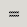

Immediately above the grid of cells is the data entry area as shown in Figure 4.22.
This is a small area, which contains a current cell indicator, a cancel button, a confirm button, an entry button, and an entry area for detailed editing of the cell contents. These elements are explained individually below.
On the far left of the Data Entry area is the current cell indicator area. This area is shown in Figure 4.23
The cell indicator will show the address for the cell at the top left of the selected region. This address is listed in the standard column:row notation. The alphabetic part indicates the the column of this top leftmost cell and the numeric part indicates the row of this top left cell. For instance, the cell which is over three columns and down two rows is designated:
C2
This designation matches the column and row headers for this cell.
While a region is being selected, the current cell indicator will change to show the size of the region which is being selected. This information is presented in a row number by column number format. For instance, this designation:
would indicate a selection area 15 rows high by 6 columns wide. Once the mouse is released at the end of the selection, the current cell indicator goes back to giving the address of the single top leftmost cell.15R x 6C
The Cancel button can be used to cancel the current edit and to restore the cell contents to the previous state. If a user decides in the middle of an edit that the data being entered into a cell is not what they want, the user can push this cancel button to cancel the current data and return the cell to the state it was at before.
The most common use of this button is when overwriting the contents of a cell with new data. If the user decided to revert the change before confirming it, the cancel button is the answer. Note that this button works just like typing the escape key on the keyboard.
The confirm button
 . can be used to finish the edit of a cell and
enter the edit into the workbook. Note that this button works
in the same way as the enter key.
. can be used to finish the edit of a cell and
enter the edit into the workbook. Note that this button works
in the same way as the enter key.
The equals button  can be used to start a formula in the currently selected cell. If a user wanted to make cell D10 equal to cell B4, the user could simply click on cell D10, click this equals button, click on cell B4 and type the enter key. Note that this button works the same way as the equals key.